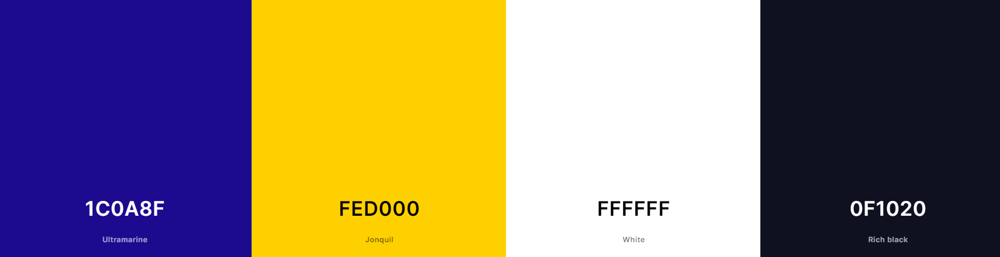

Chamber Site Plan
Site Name
Bogotá Chamber of Commerce
Site Purpose
We serve collectively so that there are more and better entrepreneurs, business people and companies, thus achieving a more prosperous and equitable society in Bogota and the region.
Scenarios
- How can I create links with other entrepreneurs and companies in the region?
- How to improve my company's competitiveness and grow?
- Where can I find information on companies near my area?
Color Schema
The blue color will be used in fonts as primaary color and the yellow one as a secondary
The black and white ones will be use in the text and paragraphs of the site.
Typography
Sriracha typography will be use for titles and subtitles in the page
Raleway typography will be use for paragraphs and another kind of text that are not mean in the website